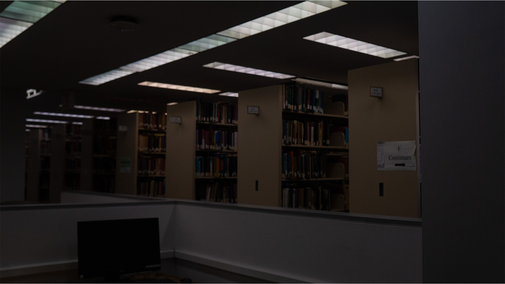
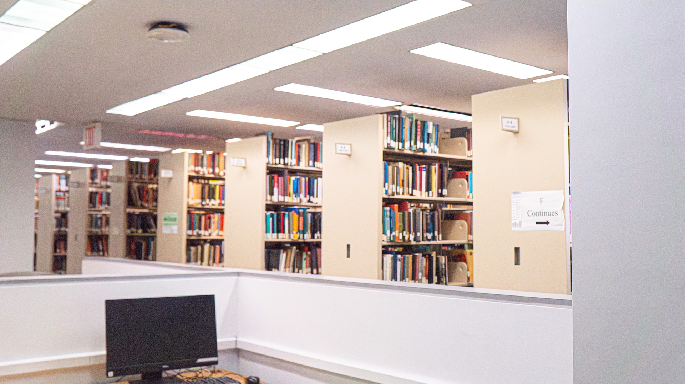
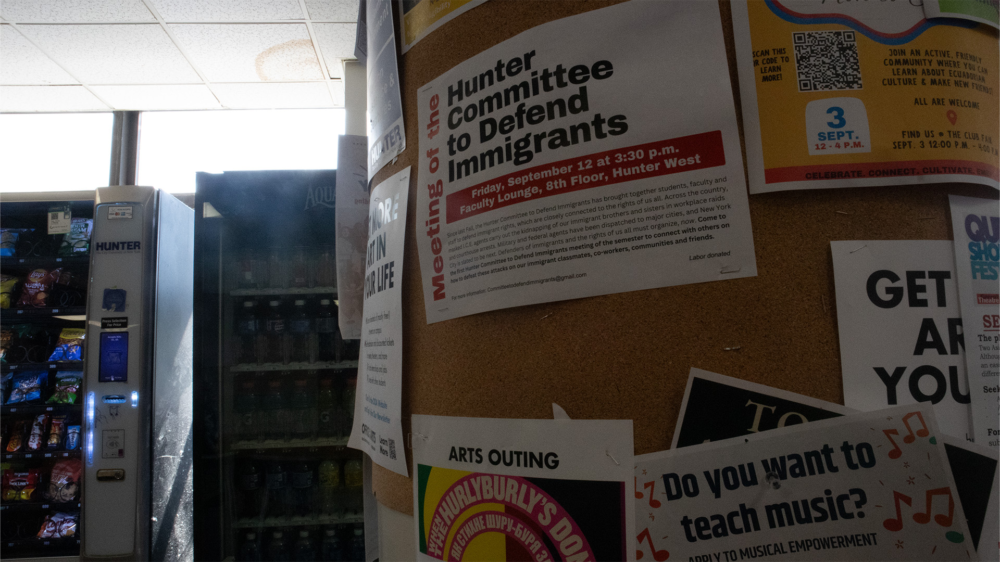

 

These are the pictures after adjusting the exposure and texture processing using the camera raw tool in Photoshop.After processing, they have obvious contrasts and the clarity has also improved.
Go to homepage